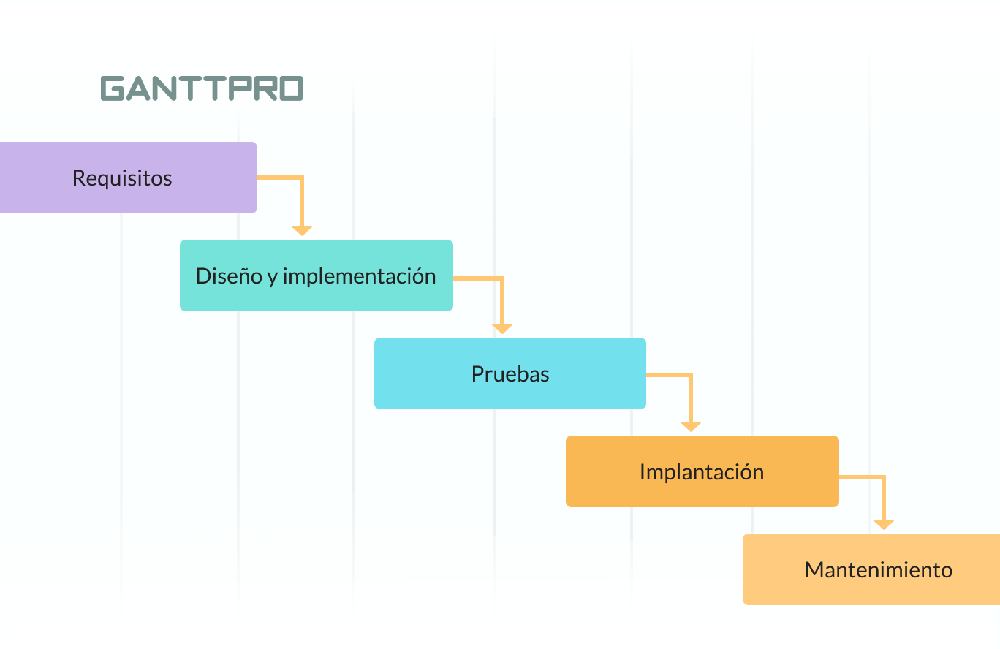
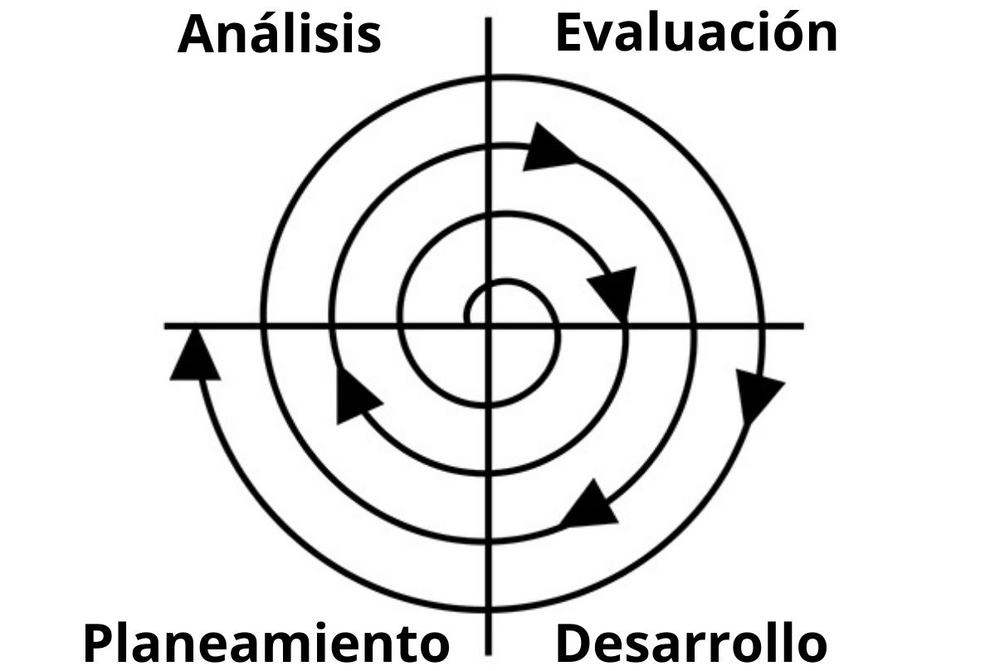

METODOLOGIA TRADICIONAL

Las metodologías tradicionales son las primeras en su tipo, que surgen como guía para garantizar la creación de un producto con un nivel de calidad. Este método se realiza de forma lineal, es decir, que cada etapa está ligada a la etapa anterior.
TIPOS DE METODOLOGIA TRADICIONAL
En cascada,incremental,prototipo, espiral.
La mas usada es el modelo cascada, los roles que se pueden identificar en el modelo son:
Gestor de proyecto, arquitecto de software, desarrolladores y probadores
METODOLOGIA EN CASCADA

El modelo de cascada es un método de gestión de proyectos, en el que el proyecto se divide en distintas fases secuenciales, donde el equipo puede pasar a la siguiente fase sólo cuando se haya completado la anterior.
Caracteristicas
se caracteriza por su secuencialidad, que
agrupa tareas dentro de fases o ciclos de desarrollo del proyecto. Además, analiza
de forma exhaustiva cada uno de los requerimientos de las fases, cosa que dificulta
volver a etapas anteriores del proyecto. Una fase no puede empezar hasta que se
finalice la anterior, haya sido revisada y aceptada por el cliente. Sin embargo, esto
no garantiza que el producto o servicio vaya a satisfacer las necesidades del cliente.
Ventajas
Usa una estructura clara,Determina el objetivo final rápidamente,Transmite bien la información
Desventajas
Dificulta los cambios,Excluye al cliente o al usuario final,Retrasa las pruebas hasta después de la finalización
METODOLOGIA RUP

La metodología RUP , abreviatura de Rational Unified Process (o Proceso Unificado Racional), es un proceso propietario de la ingeniería de software creado por Rational Software , adquirida por IBM , ganando un nuevo nombre Irup que ahora es una abreviatura Rational Unified Process y lo que es una marca en el área de software, proporcionando técnicas que deben seguir los miembros del equipo de desarrollo de software con el fin de aumentar su productividad en el proceso de desarrollo.
Es una metodología cuyo fin es entregar un producto de software. Se estructura todos los procesos y se mide la eficiencia de la organización.
Es un proceso de desarrollo de software el cual utiliza el lenguaje unificado de modelado UML, constituye la metodología estándar más utilizada para el análisis, implementación y documentación de sistemas orientados a objetos
Caracteristicas
Forma disciplinada de asignar tareas y responsabilidades (quién hace qué, cuándo y cómo).
Pretende implementar las mejores prácticas en Ingeniería de Software.
Desarrollo iterativo.
Administración de requisitos.
Uso de arquitectura basada en componentes.
Control de cambios.
Modelado visual del software.
Ventajas
Está basada totalmente en mejoras prácticas de la metodología.
Reduce riesgos del proyecto.
Incorpora fielmente el objetivo de calidad.
Integra desarrollo con mantenimiento.
Desventajas
Pretende prever y tener todo el control de antemano
Modelo genera trabajo adicional.
Genera muchos costos.
No recomendable para proyectos pequeños.
METODOLOGIA ESPIRAL

El modelo espiral tiene cuatro fases: Planificación, Análisis de Riesgos, Implementación y Evaluación. Un proyecto pasa repetidamente por estas fases en iteraciones (llamadas espirales, que es de donde este modelo toma su nombre). En la espiral inicial, se recopilan los requisitos y se evalúa el riesgo.
Caracteristicas
reduce considerablemente que fallen los proyectos grandes de software, ya que evalúa repetidamente los riesgos y verifica cada vez el producto en desarrollo.
Este modelo informático contiene componentes de casi cualquier otro modelo del ciclo de vida del software, como el modelo de cascada, el modelo de creación de prototipos, el modelo iterativo, el modelo evolutivo, etc.
Ventajas
Debido a este tipo de estructura se eliminan tácitamente los problemas entre el diseño y los requerimientos técnicos del software, gracias a las comprobaciones periódicas.
Los riesgos se analizan en cada una de las etapas del producto antes de seguir adelante. Esto ayuda a superar o mitigar los posibles riesgos.
En cada etapa del proyecto están involucrados los clientes, hasta completar el proyecto. Por tanto, se pueden reunir diferentes retroalimentaciones para así mejorar la próxima versión del proyecto.
Es particularmente popular y destacado para proyectos grandes y complejos, donde el control del presupuesto es prioritario para los clientes y desarrolladores. Se tiene un control máximo sobre los costos, recursos y calidad del proyecto de software.
Desventajas
Puede ser bastante costoso, ya que requiere un alto nivel de experiencia para el análisis de riesgos.
Es comparativamente más complejo que otros modelos, porque hay muchos ciclos, pasando cada uno por las diferentes etapas, aumentando así el esfuerzo del proceso de documentación.
Es difícil gestionar el tiempo, ya que se desconoce el número de ciclos. Además, en cualquier momento puede retrasarse el proceso de desarrollo si dentro de un ciclo se deben tomar decisiones importantes o por acciones adicionales al planificar el ciclo siguiente.
No siempre resulta favorable realizar muchos pasos en el desarrollo de software por el hecho que, a pesar de la versatilidad de las pruebas, pueden llegar al sistema terminado partes sin terminar del programa.